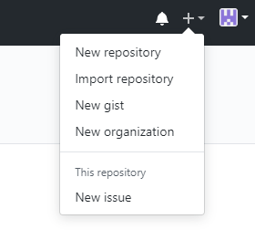
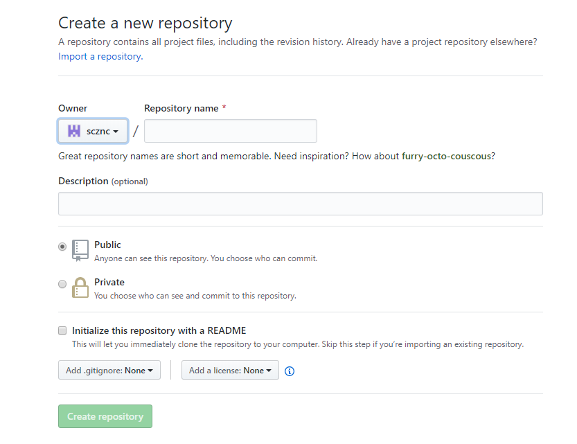

Creation of git Repository in Browser.
This can be done in two ways:-
one is through the browser.
The other is through the remote git i.e through github in windows.
and now we are going through the process of creation of new repository through browser
- First open in github account in your browser
- Then to the right corner to your account there is a "+" symbol as shown in the image

- Then click on new repository.
- Enter the repository name and fill the required fields in the shown image
- 
- Check in the README box to clone it to your personal computer
- Now the repository is created.